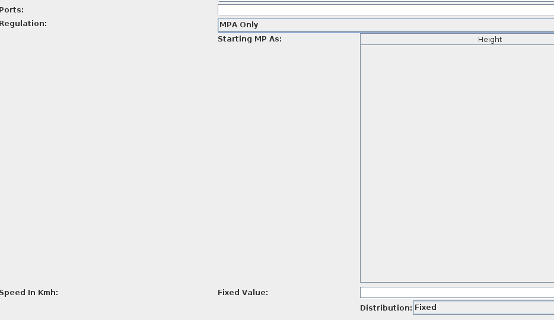

Chapter 8 Policies
8.1 Policy in POSEIDON
At its simplest policies are just another scenario parameter. In the default Abstract scenario the parameter of interest is Regulation.

There are (unfortunately) quite a lot of options. Most policies are static but a few are dynamic. Here we show by example only a few static ones.
8.2 Example Setup
To show the various effects of policies we want to modify slightly the biology and geography of the abstract scenario. In particular:
- We want to change the biology initializer to “Split in Half”
- This simply means that now there will be two species of fish, Species 0(red) and Species 1(blue), red fish living in the north part of the map, blue fish lives in the south
- We want to set
Coastal Roughnessin theMap Initializerto 0- This flattens the coast so that it looks like a straight line. Useful when making comparisons
- We want to set
Port Position Xto 40 andPort Position Yto 25- This will set the port right there in the middle of the map. Again, useful to compare the effect of different regulations
- Save this scenario as
split.yamlin some folder. This way we can re-use it when we change policies.
8.3 No Regulations
If we don’t change the Regulation parameters, the fishery is unregulated.
The result is once again the fishing front, agents start fishing near port and then spread out. Both red and blue fish are caught in approximately equal amounts.
8.4 Total Allowable Quota
Imagine that we want to target about 500,000 units of red fish caught per year but at the same time protect the blue fish by only catching 100,000 units. The simplest possible way to do so is to add a TAC to the fishery stipulating that whenever either limit is reached the fishery closes for the remainder of the year.
This is relatively simple to do in POSEIDON:
- Load the
split.yamlscenario you prepared in the previous section (click onOpen Scenario from Filebutton at the bottom of the scenario selector) - Set
RegulationtoMulti-TAC, setFirst Species Quotato 500,000 andOther Species Quotato 100,000
If we run the model now we will see a few things happen. First, the fishery will proceed in “pulses”. Agents will fish until one of the two quota limits is triggered at which point the season closes and all the fishers come to port till the end of year. Second, within each pulse the fishery still evolve along a front, eating up both red and blue fish. Third, because blue quotas are much lower, only about 100,000 units of red are caught each year: a quite serious waste of quotas.
The problem is quite obvious: there is no particular incentive for any fisher to target red fish in particular. Agents will just fish whatever is more profitable which tends to be what’s closer.
8.5 Individual Tradeable Quotas
The American solution to this problem tends to be to make quotas tradeable. The idea is that if quotas for the rare fish is expensive, agents will try and avoid it as much as possible. We can replicate this in POSEIDON:
- Change
RegulationtoMulti-ITQand set theQuota First Speciesto 5000 and theQuota Other Speciesto 1000.- The ITQ regulation numbers refer to the individual quota allotment given. Since by default there are 100 fishers, the total amount of quotas is the same as the TAC example above
- Tick the
Use Predictorsparameter to true- As explained in the paper, an ITQ system can only work when agents form an expectations of what the value of their quota is. This is not difficult to do but the formulas are turned off by default because they are a computationally expensive. If
Use Predictorsis not turned on, no agents will participate in the quota market
- As explained in the paper, an ITQ system can only work when agents form an expectations of what the value of their quota is. This is not difficult to do but the formulas are turned off by default because they are a computationally expensive. If
The emergent response of the system is more or less what we expect. Fishers, especially after a first year where prices are unsettled, learn to avoid the blue areas and focus on the red ones. Notice that strictly speaking the agents do not know where fish live, this is all driven by random exploration and imitation.
8.6 Fines
A similar result can be achieved simply by imposing a fine on catching blue fish. To do so in POSEIDON:
- Change the
Marketparameter toFixed Price Market Arrayand change itsPricesto: “+10,-10”- Basically
Fixed Price Market Arraywill set the price for each species (per unit caught). “+10” will be the price of red fish, “-10” will be the price of blue fish.
- Basically
This generates much the same blue avoidance, without the need of a complicated quota market:
Notice however that the kind of control is slightly different. With an ITQ you know for sure that never gets caught past their quota regardless of the conditions on the ground. With a simple fine you don’t really know until you simulate it how effective it is and how much ends up being caught. This is of course the informational problem of all Pigouvian taxes.